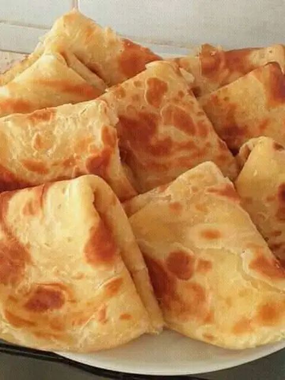

Chapati is one of the favourite meals among the East African community especially Kenya. It's a no miss meal in any occassion be it formal or informal, corporate traditional or religious functions.
It's prepared from mainly heat flour and water but for better taste we are going to learn more than the the traditional ways of preparing chapati